以诗意美学为锚，在商业与理想的平衡中持续书写品牌与时代共鸣的诗篇，这或许就是Aesop穿越资本迷雾与快消浪潮、始终紧握消费者心魂的终极密码。
在上海弄堂小洋楼、北京胡同四合院的门店里，不定期举办读书分享会和电影放映活动，既没有广告代言人，也没有夸张的产品宣传。如果仅从环境氛围判断，你可能会误以为这是文艺书店或小型美术馆，然而这其实是护肤品牌 Aesop 的线下门店形式。
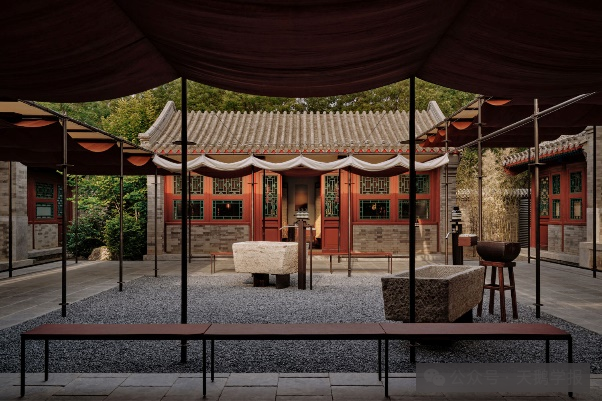
Aesop北京王府井店
在身体护理领域，Aesop因其独特的品牌美学脱颖而出。无论是肉眼可见的包装风格、平面设计、建筑、艺术元素，还是感官层面的音乐、文学和城市印记，比起一个单纯追求功用与销售的品牌，它更像一个和我们观点合拍、彼此启发的思考者。比起单纯追求功用与销量的品牌，它更像一个与我们观点高度契合、相互启发的思想伙伴。通过将诗意美学与实用主义完美融合，并借助社交媒体平台深化与消费者的精神联结，Aesop 在竞争激烈的护肤品市场成功塑造了强大的品牌力。
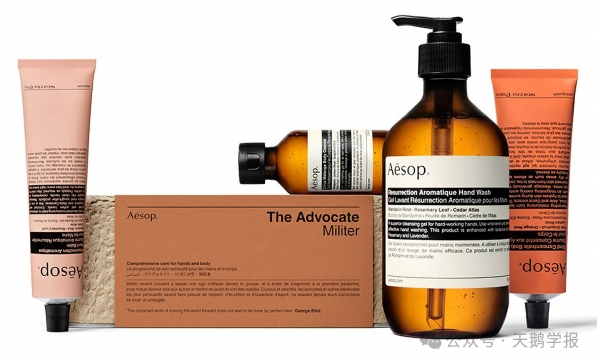
Aesop现有部分产品线
品牌起源
Aesop成立于1987年，它的名字起源于《伊索寓言》（Aesop’s Fables）。其创始人Dennis Paphitis最初在澳大利亚的维多利亚州阿马代尔开设了一家名为Emeis的美发沙龙，但当时的美发产品大部分由欧洲公司垄断，气味难闻。偶然一次机会，Dennis Paphitis发现若在染发剂中加入精油，精油天然的香气可以让消费者迅速调整心情，感受到沉静与安宁。
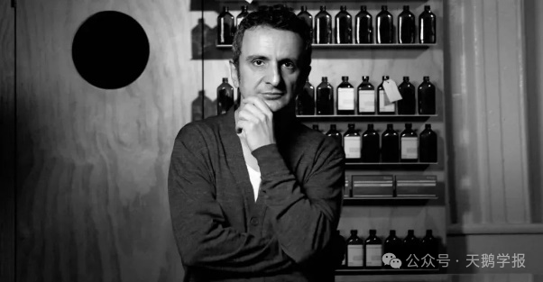
Aesop创始人Dennis Paphitis
洞察到这一商机后，Dennis Paphitis随即研发出一款轻柔洗发露，并向每一位到店的顾客派发使用样品。在得到正面反馈后，Dennis开始与洛杉矶的化学家朋友合作研究原料，陆续推出用天然植物成分制成的护手霜、洁面乳、精华液、洗手液和香水等产品。这也奠定了Aesop绿色有机的品牌特色。
1991年，团队开始研发护肤系列产品。1989年，品牌正式由Emeis更名为Aesop，与古希腊著名哲学家伊索同名。1996年，Dennis不再从事美发工作，专心投入产品研发中，搭建起产品线，为Aesop的产品矩阵奠定了坚实的基础。
诗意美学与实用主义的平衡
从创始之初，Aesop即定位极简主义，从产品设计、店铺风格，都围绕最本真和最简单。Aesop最初的包装设计即采用半透明茶棕色玻璃与塑料瓶。茶棕色玻璃不仅可以隔离紫外线有效保护产品，且可回收重复使用，奠定了Aesop可持续的品牌调性，也进一步强调了经典的药剂师美学，该传统一直延续至今。
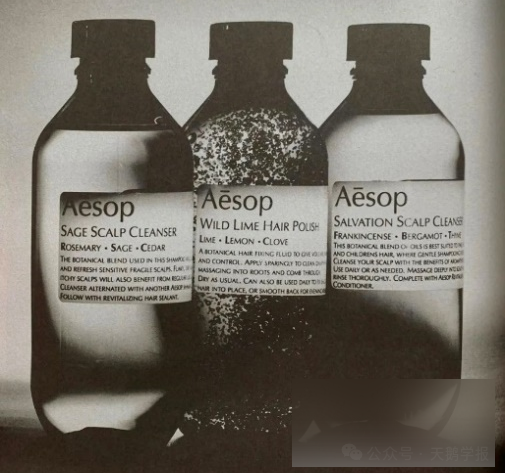
诞生之初的Aesop包装风格和今天并无太大差异
Aesop多年来贯彻如一的美学实践看似符合如今社交网络中大火的“冷淡风”，而对Aesop而言，只是为了跳过花哨、浪费、带有煽动性的包装，把实用主义践行到底。半透明茶棕色玻璃与塑料瓶，纯白标签背景上的黑色Helvetica和Optima Medium字体，把视觉干扰降到最低，便于消费者清晰地看见产品名称、成分和使用方式，高效地传达了产品信息。当其他品牌在追逐华丽包装时，Aesop用最朴实的容器诠释了“less is more”的设计哲学。
Aesop如今的产品包装设计
此外，Aesop的门店用广义的“文学性”创造了一种氛围、一种体验，让顾客走进Aesop的每一间门店，都像走进了一间图书馆、一个植物园、一场展览。Aesop通过文字、图书、艺术、展览等一系列强有力的感知线索锚定精神文化需求相契合的消费者，让散落在世界各地的Aesop实体店，成为人们慰藉感官、涉足空间诗学、以及与世界互动的“目的地”，从而获得强烈的满足感和归属感。
这种牢固的情感联结与价值共鸣使得消费者自发地在社交媒体上分享自己独特的消费体验和品牌感知。网络时代强烈的外部性使得Aesop得以实现品牌力塑造的线上线下融合闭环，其诗意美学与实用主义的结合更为深入人心。
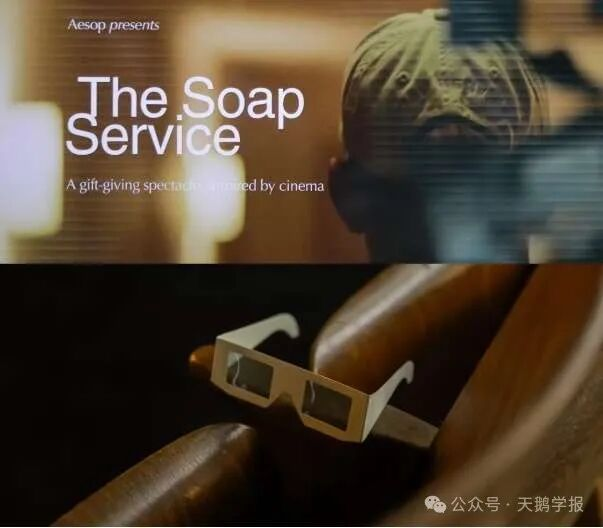
消费者在社交平台小红书上分享Aesop深圳特别观影活动
Aesop互联网时代的品牌力塑造
保持初心的长期主义
在从小众市场向大众市场拓展的征途中，Aesop始终如一地坚守品牌理念与服务品质的统一。在对产品品质的追求上，Aesop每年会将80%的资源投入于产品研发中，这一比例在整个美妆行业几乎闻所未闻。当大多数品牌在营销和包装上大做文章时，Aesop却选择了一条截然不同的道路：专注于将单款产品做到极致。尽管创立 30 余年每年仅推出 3-4 款新品，但每款产品都经过市场与时间的双重验证。
以其明星产品“resurrection aromatique hand wash”为例，该洗手液不仅满足基础清洁需求，更通过添加柑橘、迷迭香、薰衣草等天然精油，将日常清洁升华为感官享受。配方中的磨砂颗粒兼具去角质与滋养双手的双重功效，一瓶产品实现消费者多重需求满足。这种聚焦用户痛点的 "慢生长" 策略，奠定了 Aesop 在护肤领域的专业地位。
在可持续发展方面，Aesop严格遵循“零残忍”和“纯素”两大原则，坚决不在动物身上进行任何配方或成分测试，产品成分以植物成分为主并践行绿色主义。从产品包装到门店装修材料均采用可回收材质，同时品牌鼓励消费者将空瓶带回门店进行专业回收。在新店打造过程中，Aesop 经常通过“就地取材”赋予废旧材料“二次生命”，延续品牌一贯的可持续发展理念
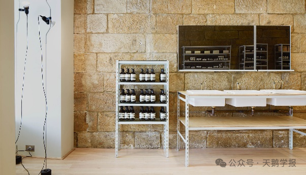
Aesop在澳大利亚巴尔曼的门店使用就地回收的材料，门店设计风格与周围环境特点相融合
在即时消费文化与注意力碎片化趋势主导的互联网时代，Aesop 展现出逆流而上的品牌定力。相较于斥巨资邀请明星代言的广告轰炸，Aesop 将资源聚焦于内容营销。其官方网站与社交媒体持续呈现产品背后的文学故事，以文字、影像、音乐等多元载体吸引注重品牌内涵与生活品质的消费者。
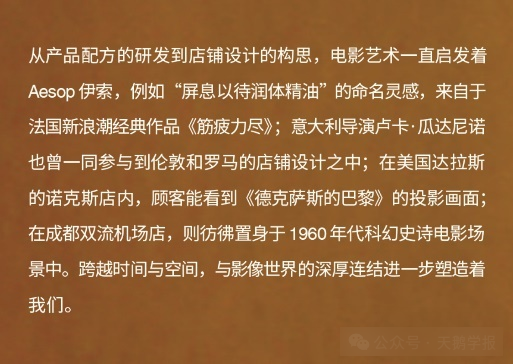
Aesop在微信公众号上讲述产品与电影间的联系
当用户沉浸于品牌构建的叙事空间时，往往会产生强烈的价值共鸣，主动在社交平台留言互动并分享体验。这种双向互动不仅构建了品牌与消费者的深度对话，更催生出自发传播的用户网络。
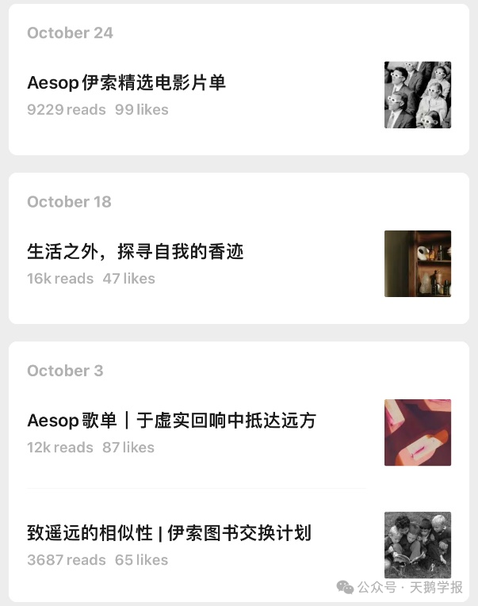
Aesop在微信公众号上分享影视文学等内容
在地化探索的美学主义
“千店千面”常被用来形容Aesop的线下门店。在其他品牌标准化模板复制所有门店时，Aesop始终坚持在地化探索，在世界各地打造独一无二的Aesop空间。其每家门店均深度解码所在地文化基因，将色彩体系、空间布局、建筑材料等元素与当地特色深度融合。Aesop 官网明确指出：“在新店构思过程中，我们致力于融入所在街道肌理，为社区创造价值而非破坏环境和谐。”
以广州东山口店为例，该门店选址岭南传统院宅，从顺德旧宅回收的青砖铺就花园小径，青灰色调的砖块肌理无声诉说着广府建筑的历史脉络。Aesop于此处构建的不止是产品体验空间，更是美好生活理念的表达——以丰富的产品系列为洗护带来愉悦享受，以深思熟虑的设计深入日常生活的本质。
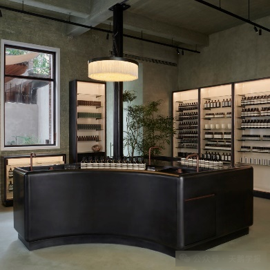
Aesop广州东山口店
Aesop每一家门店都像是一个独立的艺术品，向消费者展现当地特色文化和Aesop独有的价值观。这种既能保持品牌调性的一致性，又能尊重本地文化的设计美学，塑造了Aesop独特的品牌力，让消费者拥有极致的精神体验和审美价值的享受，从而自发形成在社交媒体的购物体验分享亦或是门店拍照打卡，带动更多的口碑传播。
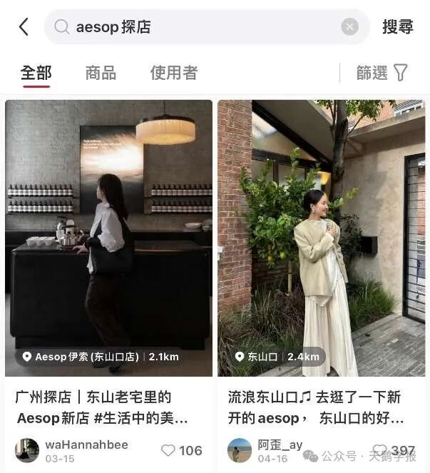
消费者在小红书上分享Aesop门店线下体验
社区活动与品牌联结
在品牌成立至今的三十多年，Aesop在兼顾商业诉求、美学表达与社会意义的同时，还在持续不断地从空间的视角关注世界的多元。文学一直是滋养Aesop成长壮大的土壤，Aesop每一家线下门店都会有一句文学选句，例如上海东平路店是王阳明的名言 “Knowledge is the beginning of practice, doing is the completion of knowledge.”（知行合一）。
Aesop通过不断与文学、电影、建筑、设计等领域跨界合作，借助网络媒体的宣传，用实际行动诠释品牌价值观，构建与消费者的情感联结与精神共鸣。落到一个个具体的空间与内容项目中，Aesop支持女性主义的表达，在中国大陆发起“女性主义图书馆”项目，将产品陈列改为一系列由女性创作或与女性主题相关的书籍，邀请本土女性作家、艺术评论家进行深度交流，创造了一个让文学与美学碰撞的平台。
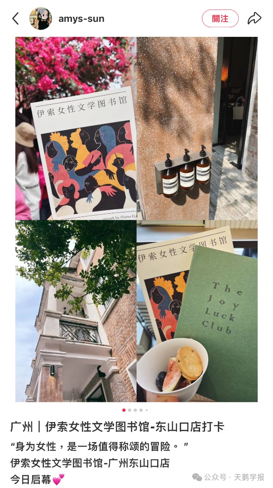
消费者在小红书上分享自己参与Aesop女性文学图书馆活动
Aesop也会关注性少数群体，推出“酷儿文学图书馆”，借由文学作品表达对LGBTQIA+人群的尊重。
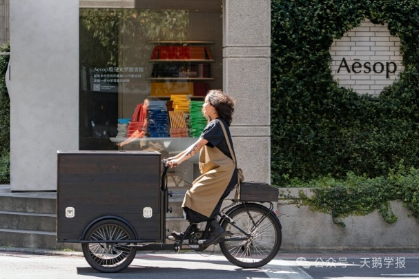
Aesop在中国台北开设的酷儿文学图书馆
Aesop把自己投入更宽广的社区，与城市，与人群产生联系，使品牌成为一个文化和社交的聚集点。通过不同的社群活动，Aesop的品牌力得以进一步扩散到生活方式领域，消费者会被吸引来参与和分享，在社交媒体上进行口碑传播，从而进一步扩大品牌网络的聚合效应。
品牌启示与未来展望
回望Aesop的品牌发展历程，它不是通过激进的市场战略来扩张版图，而是通过诗意的方式让消费者向往那片“广阔的海洋”。它将品牌的艺术调性与商业理念进行了完美的融合。产品研发的严谨、设计美学的坚持、文化价值的积累，这些构成了Aesop的品牌基因。通过门店的在地化探索，Aesop让我们看到品牌可以在保持核心理念的同时，拥抱本地文化的多样性。人文关怀和对社会议题的表达，则是强化了Aesop与消费者之间的联结。
Aesop在线下门店讲述品牌故事，消费者在线上平台进行口碑宣传，二者之间形成高粘度行为闭环，Aesop在利用网络外部性传播品牌影响力的同时，也提升了顾客忠诚度，吸引了更多的潜在用户。
然而随着Aesop被商业巨头欧莱雅收购，Aesop或许不仅需要思考如何在资本赋能下保持品牌内核的纯粹，平衡理想与商业之间的关系，还要在短视频为王的快时代下，利用互联网以更为生动有趣的方式讲述品牌故事，进一步加深与消费者之间的互动和情感联结，塑造更为强大的品牌力。
参考文献
[^1]肖叶舟.网络时代品牌传播演进路径初探[J].记者摇篮,2023,(10):36-38.
[^2]王良燕,张天伦.从品牌资产到品牌力：数字时代的品牌管理创新[J/OL].系统管理学报,1-14[2024-11-13]. http://kns.cnki.net/kcms/detail/31.1977.N.20241028.0856.002.html.
[^3]Aesop伊索，如何讲述现代商业新“寓言”.数英DIGITALING,2024.
[^4]Aesop中国首店为何备受瞩目？一文读懂这个“小众”护肤品牌崛起背后的“门店经”。界面新闻, 2022.
[^5]Aesop门店的灵魂，是什么？SocialBeta, 2024.